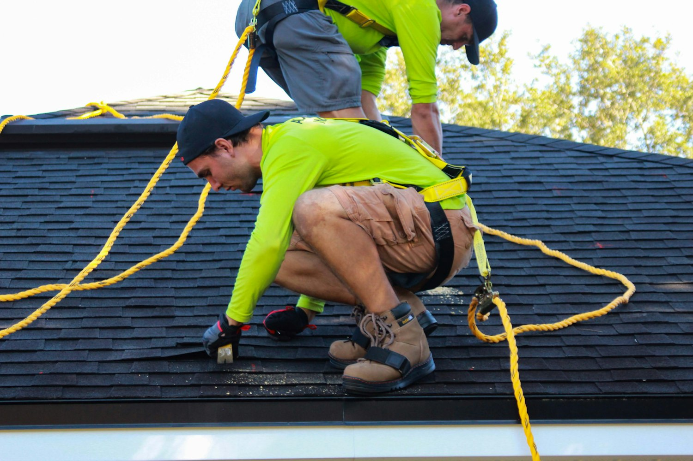
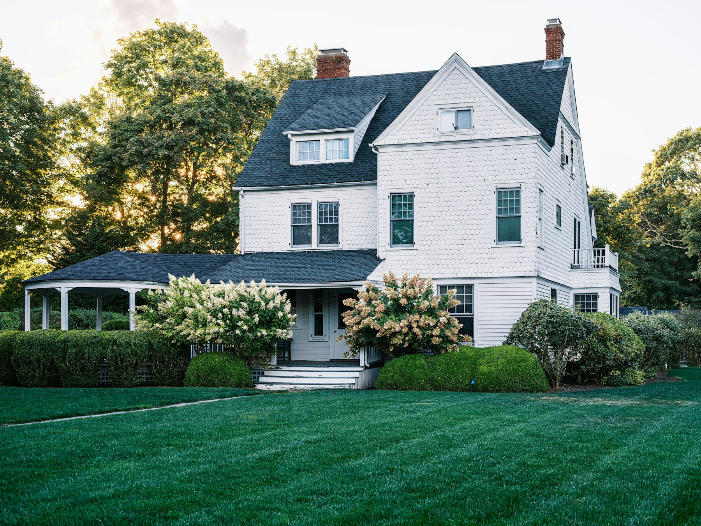

Two generations on the same roofs.
Dale Tolliver started the company out of a pickup in 1996. Wade runs it now. Same metro, same phone number, same rule about not knocking on doors.
How it started, and why it has not changed much.
Dale spent eleven years working for other people's roofing companies before starting this one, and most of what he disliked about those years turned into a rule here. No commissions for the person on the roof. No pressure to close in the driveway. No canvassing crews after a storm.
He was not being noble about it. He had watched neighbors get sold roofs they did not need, and he figured that in a metro this size you only get to do that for about five years before it catches up with you.
Wade grew up carrying bundles on Saturdays and took over the day to day in 2018. Dale still comes in, still answers the phone on Saturdays, and still reads every report that goes out with a replacement recommendation on it.
The crew is the company.
You can buy the same shingle anywhere in this metro. What you cannot buy off a shelf is the crew installing it, which is why almost every roof that fails early fails on the installation rather than the material.
-
Employees, not day labor
Our crews are on payroll, insured through us, and have mostly been here for years. Nobody assembled them in a parking lot the morning of your tear-off.
-
Two crews, on purpose
We could run six and take every job in a hail year. We run two, because a company that triples its crews after a storm is hiring strangers to work on your house.
-
Somebody senior on every roof
A lead who has been doing this a decade is on site for the whole job, not stopping by at lunch between four other addresses.
Credentials
The paperwork, plainly.
- Licensed and insured in the State of Iowa
- General liability and workers compensation, both current. Ask any contractor for certificates naming you, and be careful with anyone who hesitates. If a worker is hurt on an uninsured crew, that can land on your homeowner policy.
- Ten years on the workmanship
- Ours, in writing, on top of whatever the manufacturer covers on the material. It is transferable once if you sell the house, which is worth something at closing.
- We are not public adjusters
- We document damage and meet your adjuster on the roof. We do not file claims for you or negotiate your settlement, because that requires a license we do not hold.
- Every report is archived
- Call in four years and we can pull the photographs from your last visit and tell you what changed. That is most of the value of having someone local.

Where we work, and where we stop.
Polk, Dallas and Warren counties, plus Jasper and Madison. Des Moines and Beaverdale, Ankeny, Johnston, Urbandale, Waukee, Clive, West Des Moines, Norwalk, Altoona and Grimes.
Past about forty-five minutes from the shop we say no, and we mean it even in a hail year when the phone will not stop. A warranty is only worth what it costs us to honor it, and if we cannot get a truck back to your house on a Tuesday morning in year six, that warranty is decoration.
If you are outside that ring, call anyway. We would rather spend two minutes naming somebody reputable near you than have you start from a search result.
They told me my roof had four good years left and did not try to sell me a thing. I called them back in year four.
Renee KasparBeaverdale
Storm rolled in early and the decking was open. The crew tarped the whole thing down and stayed until it held. Nobody asked them to.
Marilyn SteenhoekWaukee

Have us out and see what you think.
Free, about forty-five minutes, and no obligation at the end of it.